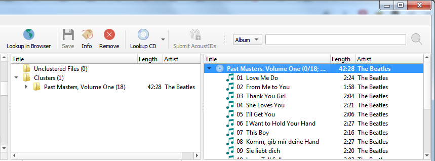

Recherche manuelle¶
Les étapes à suivre pour rechercher manuellement un album sur MusicBrainz sont:
Ajoutez vos fichiers en utilisant ou . Pour faciliter l’utilisation, il est recommandé d’utiliser le navigateur de fichiers interne pour gérer les interactions du système de fichiers. Ceci est activé à partir de .

Faites glisser le répertoire ou les fichiers sélectionnés vers le dossier « Fichiers non groupés » et attendez que Picard traite les fichiers - les noms passeront du gris au noir.

Entrez vos informations de recherche dans la zone de recherche et sélectionnez le type d’enregistrements à rechercher, puis cliquez sur le symbole de la loupe pour lancer la recherche. Cela ouvrira le site Web MusicBrainz dans votre navigateur.
Continuez à explorer en cliquant sur les liens appropriés jusqu’à ce que vous arriviez à la version que vous souhaitez récupérer.
{kind=link}
{kind=link}
Utilisez la flèche verte
 pour charger les informations pour une publication dans Picard.
pour charger les informations pour une publication dans Picard.Un symbole de musique devant un numéro de piste dans le volet de droite indique qu’aucun fichier n’a été attribué à la piste.

{kind=link}
{kind=link}
Note
Si vous entrez un lien vers l’entrée souhaitée (par exemple: https://musicbrainz.org/release/9383a6f5-9607-4a36-9c68-8663aad3592b) dans le champ de recherche en Picard, l’entrée sera chargée directement sans ouvrir une fenêtre de navigateur.